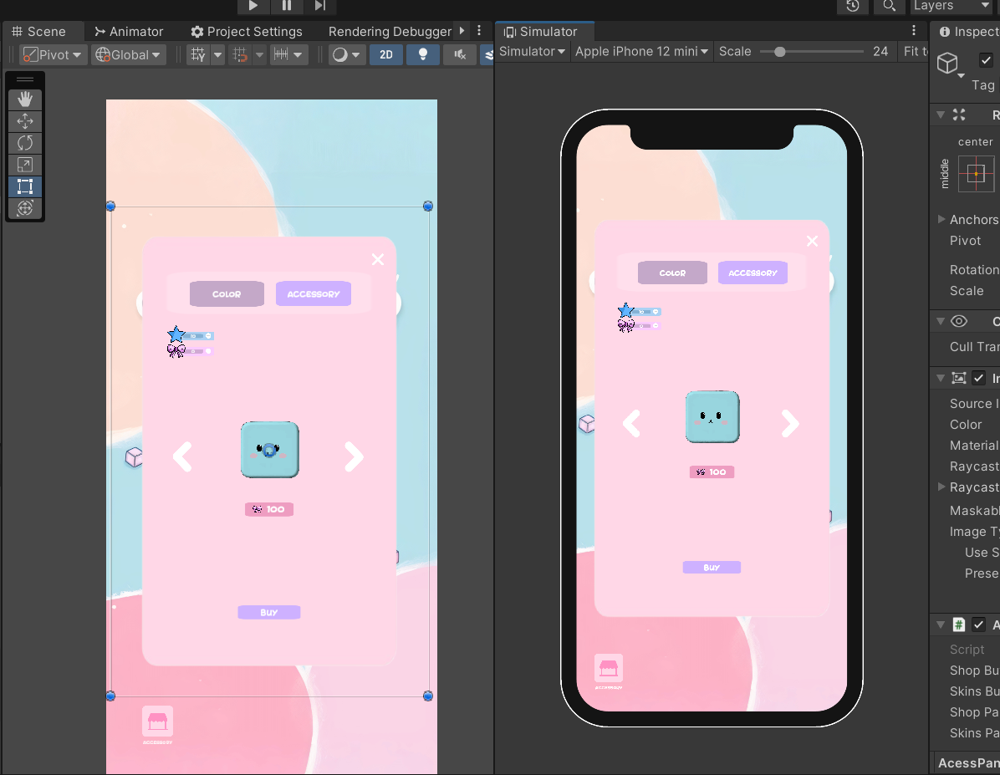
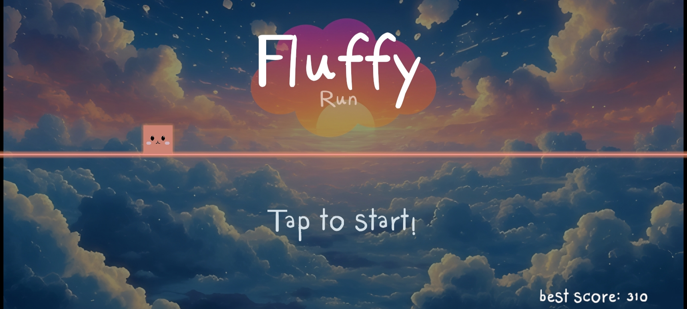
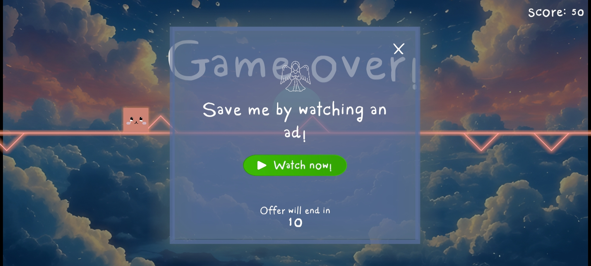

Projects
- Tumble Cube: A 2D multiplayer game developed with Unity. 
- Dysphrenia: A 3D horror game developed with Unity.
- FluffyRun: A fast-paced endless runner game for mobile platforms.  
-
Boomerang: A skill-based timing game with reactive enemy waves.


-
Catch the Cat: A lighthearted reflex-based game where you try to catch a sneaky cat.


-
Crazy Craft Racer: A chaotic vehicle racing game with physics-based mechanics.


- 2048: A classic puzzle game clone made to enhance logic and grid programming skills.